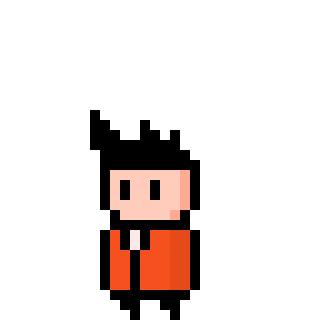
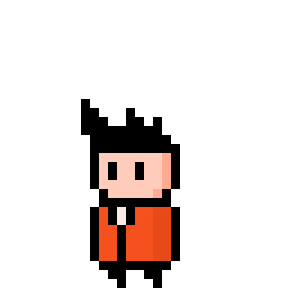

Hi, I'm Batuhan
Software engineer, Gamedev, Super cool guy
Software engineer, Gamedev, Super cool guy

Graduated from Bilkent University, Electrical and Electronics Engineering department. Passion for Game Development, never formally practiced it though. Working on a mobile game as a solo dev. Currently employed in Proven Bilişim as a Senior Software Developer.
Developed test software for test projects. Deveolped software for ASELSAN personnel to use. These software were mostly for receiving and transmitting messages over serial and ethernet connections. They were developed using Java and JavaFX.
Worked as Test Engineer for various ASELSAN projects. Tested software mostly for military marine applications. The performed tests were all manual tests. Developed test software for test projects. These software were mostly for receiving and transmitting messages over serial and ethernet connections. They were developed using Java and C#.
Worked as a subcontractor personnel at ASELSAN MGEO. Tested driver software for Hürkuş and Turkish Utility Helicopter Program. Since these tests were so low level tests, they were done using code. All of the tests were written in C++. Responsibilities included writing and running the tests, performing Software Coverage Analysis tests, reporting findings and performing FQTs. The tested drivers had to be certified as Level-A, so the tests were run according to the DO-178B guidelines.
Worked in the quality control department.
Worked on various design projects, mainly using microcontrollers.